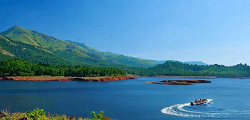

Wayanad District came into existence on 1st November, 1980 as the 12th District of Kerala consisting of Mananthavady, Sulthanbathery and Vythiri Taluks. The name Wayanad is derived from Vayal Nadu which means the land of paddy fields. Replete with waterfalls, historical caves, comfortable resorts and homestays, Wayanad in Kerala is famous for its spice plantations and wildlife. Walking through the sprawling spice plantations, trekking to the pre-historic caves and experiencing a resort holiday are one of the many things you can do to get a taste of Wayanad. Wayanad is best known for the wildlife reserves - Wayanad wildlife reserve which is home to an exquisite variety of flora and fauna. Wayanad wildlife reserve is an integral part of the Nilgiri biosphere reserve peacefully located amidst the serene hills of Western Ghats. Wayanad homes a wide variety of wildlife like elephants, leopards, and bears. Wayanad is a perfect weekend idea from the cities of South India. If taking a road trip from Bangalore, you will drive through three national parks: Nagarhole, Bandipur and Mudumalai.
Wayanad Wildlife Sanctuary
Famous for its exquisite rock and wall carvings, this pre-historic Edakkal Caves measures 96 ft long and 22 ft wide. You need to trek for one and half hour to hit the cave entrance, and another 45 minutes to reach the mouth of the cave.

Banasura Sagar Dam
Lying in the lap of the Banasura hills in the Wayanad district is the picturesque Banasura Sagar dam. Banasura Dam is the largest earthen dam in the country and the second-largest in Asia. The view of the sprawling reservoir from the top of the dam is breathtaking.
Edakkal Caves
Famous for its exquisite rock and wall carvings, this pre-historic Edakkal Caves measures 96 ft long and 22 ft wide. You need to trek for one and half hour to hit the cave entrance, and another 45 minutes to reach the mouth of the cave.
History
Wayanad antecedes to Paleolithic civilisation which is approximately 800 years old. Also, Edakkal caves in the district constitute 6000 years-old engravings from Neolithic civilisations. In addition to this, there is archaeological evidence which proves that forests of Wayanad are inhabited for more than 3000 years. Wayanad was ruled by rulers of several dynasties like the Kutumbiyas, Kadambas, Hoysalas, Vijayanagara empire etc. Amongst all the important Rajas, Pazhassi Raja of ancient Kottayam was the most powerful ruler of Wayanad. He lost his kingdom to Tipu Sultan. During the rule of Tipu Sultan, the place flourished and grew. However, it did not last long as the British East India Company was mushrooming their control across the country. In the year 1799, the British took over Wayanad and encouraged wealthy crop production. Therefore, over the years, tea, coffee and spices were cultivated on the fertile soils of Wayanad. At the time of colonial rule, a lot of infrastructural development took place in Wayanad. Earlier, Wayanad was a part of both Kerala and Karnataka. Hence, a significant percentage of the population speaks Kannada. However, the principal languages spoken are Malayalam and English. Later in November 1980, it was declared as the 12th district of Kerala formed out of land cravings of Kannur and Kozhikode.